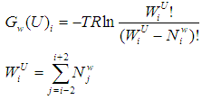

This parameter was developed by us as a measure of the free energy associated to the entropy of the water molecules attached to a particular residue. This entropy is estimated based in a pseudo-explicit representation of the water molecules coordinated to a particular polar residue. The entropy contribution comes from the possibility of interchanging the vibrational and rotational states among the water molecules grouped around the polar residue. The corresponding formalism results as:

Where  means the number of water molecules associated to a polar residue.
means the number of water molecules associated to a polar residue.